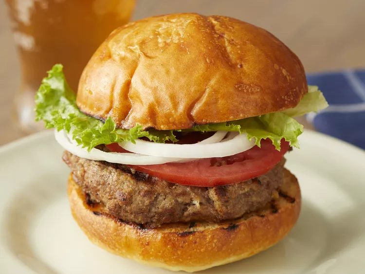

Burger Recipe

The Perfect Basic Burger
Learn how to cook the perfect standard burger.
The burgers are made with ground beef and a
bread crumb mix.
Ingredients
- 1 large egg
- 1⁄2
teaspoon salt
- 1⁄2
teaspoon ground black pepper
- 1 pound ground beef
- 1⁄2
cup fine dry bread crumbs
Steps
- Preheat an outdoor grill on high heat and
lightly oil the grate.
- Whisk together egg, salt, and pepper in
a medium bowl. Add ground beef and bread
crumbs and mix with your hands until it's
well blended. Form into four 3/4-inch-thick-patties.
- Place patties on the preheated grill. Cover
and cook 6-8 minutes, or to desired doneness.
A thermometer inserted into the patties
should read at least 160 degrees ℉.